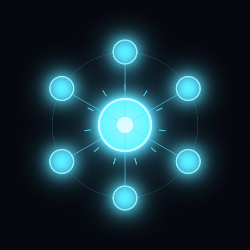

Perihelion
Traverse a knowledge graph, one node at a time.
Install on iPhoneOpen this page in Safari on the iPhone 12 mini this build was signed for. The install prompt will not appear on a desktop browser.
This replaces Constellation, it does not upgrade it. The app was renamed, so it carries a new bundle identifier and installs alongside the old one. Delete Constellation from your home screen after this finishes.
- Version
- 2.2.0 (8)
- Bundle
- com.craigglendenning.perihelion
- Min iOS
- 13.0
- Signing
- Development · MCALPSQ5P5
- Graph
- Live Wikidata · 122M items
- Network
- Required · Wikidata + Wikipedia
What changed in 2.2.0
- While you read a topic, the app quietly draws the rosette for all six satellites in the background. Tapping one is then immediate rather than a two to six second wait.
- Warming runs three at a time, not six, to stay well inside what a public endpoint should be asked for.
- A warmed draw is used once. Returning to a topic later still gives you a different six.
- Labels and property lists are cached for the session, bounded so a long session cannot grow without limit.
Article summaries are fetched at runtime from Wikipedia and shown verbatim under
CC BY-SA 4.0, credited in the app to the article they came from.
Topics and relationships come from Wikidata under CC0, a public domain dedication. Nothing under a share-alike licence is bundled into the app.